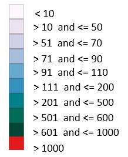

VISUAL ANALYTICS 201820
Hurto de Celulares en Colombia.
Muestra el consolidado del hurto de celulares en Colombia a partir del año 2010 al 2018, discriminado por departamento.
Información extraída del portal POLICÍA NACIONAL DE COLOMBIA en el siguiente enlace: https://www.policia.gov.co/grupo-informaci%C3%B3n-criminalidad/estadistica-delictiva
A pesar de la estrategia implementada por el Gobierno para contrarrestar el hurto de teléfonos celulares, este delito no da tregua y en los primeros cuatro meses del año se contabilizaron unos 424.000 equipos robados.
El hurto de celulares se ha convertido en uno de los delitos más recurrentes y también rentables de la última década en Colombia, dado que ese mercado ilegal ha movido al menos $830.000 millones al año.
A continuación, se muestran unas cifras de robos de celular por año y departamento en Colombia:

Guia:
- Esta visualización nos permite ver cuáles son los Departamentso con mas hurtos de celular.
- Puede serleccionar al Año para ver las estadisticas.
- El color del área depende del numero de hurtos. A continuación, una escala del color:
